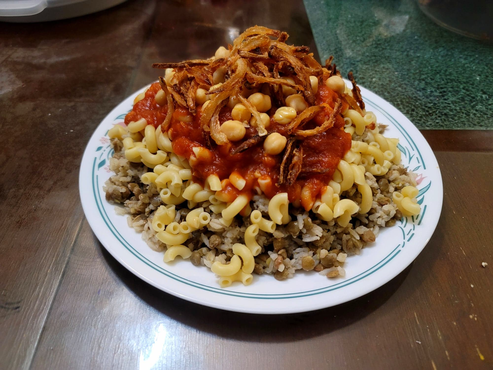

Koshari

Ingredients:
Fried Onions:
- 1 large Onion, sliced thinly
- Salt, to taste
- 1/3 cup Flour, or as needed for dredging
- 1/2 cup Vegetable oil, or as needed for frying
Sauce:
- 1 tbsp Vegetable oil
- 1 small Onion, grated
- 4 cloves Garlic, minced
- 1 tsp Coriander
- Optional: 1/2 - 1 tsp Aleppo pepper
- 1 28 oz can Tomato sauce
- Salt, to taste
- Black pepper, to taste
- 1-2 tbsp White vinegar, or to taste
Koshari:
- 1 1/2 cup Brown lentils, rinsed
- 4 cups Water
- 1 1/2 cup Medium-grain rice, rinsed and soaked in water for 15 minutes
- 1 tbsp Vegetable oil
- 1/2 tsp Salt
- 1/2 tsp Black pepper
- 1/2 tsp Coriander
- 2 cups Elbow pasta
- 3 cups Water, or as needed
- 1 15 oz can Chickpeas, rinsed and drained
Instructions:
- For the fried onions, add the oil to a large skillet and heat over medium-high heat. Take the onion and toss with salt to taste. Then toss with flour to dredge evenly.
- Place the dredged onions into the hot oil and fry for about 15-20 minutes, stirring frequently, until browned and crispy.
- For the sauce, add the oil to a sauce pan over medium heat. Add the onion and sauté until just starting to brown, about 7 minutes. Then add in the garlic and spices and sauté for another minute.
- Add the tomato sauce and salt and pepper to taste. Bring to a simmer and cook, uncovered, for 15 minutes or until thickened.
- Taste the sauce and add salt and pepper as needed. Then stir in the vinegar. Cover and heat over low heat to just keep warm.
- To a separate pot, add the lentils and 4 cups water. Heat over high to bring to a boil and then reduce to a simmer over low. Parboil for just 15-17 minutes. It will finish cooking later with the rice. Then drain and season lightly with some salt.
- Drain the rice from its soaking water. Add the drained rice and the drained lentils to a pot along with the oil, salt, pepper, and coriander. Heat over medium-high heat and stir constantly. Cook for 3 minutes. Then add about 3 cups of water, or as needed to cover the rice and lentils. Bring to a boil and then cover and reduce the heat to low. Let cook for 20 minutes before removing from the heat and letting rest for 5 more minutes without removing the cover.
- Meanwhile cook the pasta. Bring a large pot of salted water to a boil and then add in the pasta. Let cook until al dente or to preference, about 7 minutes. Then drain from the water.
- For the chickpeas, place them into a bowl and microwave just to warm up.
- To serve, layer onto a serving plate in the order of lentils/rice, pasta, sauce, chickpeas, and then the fried onions. Serve hot immediately.